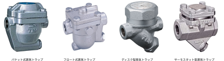
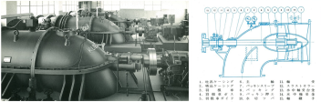
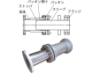
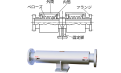

2023年
問題75 空気調和設備のポンプ，配管及びその付属品に関する次の記述のうち，最も不適当なものはどれか．
（1）バタフライ弁は，軸の回転によって弁体が開閉する構造である．
（2）軸流ポンプは遠心ポンプと比較して，全揚程は小さいが吐出し量が多いという特徴をもつ．
（3）伸縮継手は，温度変化による配管軸方向の変位を吸収するためのものである．
（4）玉形弁は，流体の流量調整用として用いられる．
（5）蒸気トラップは，機器や配管内で発生した高い蒸気圧力を速やかに外部に排出するための安全装置である．
2023年
問題75 正解（5） 頻出度AAA
蒸気トラップは，配管内の凝縮水を分離，排水する装置であって，圧力を逃がす装置ではない．
配管内の凝縮水をそのままにするとスチームハンマの原因となる．
機器や配管内で発生した高い蒸気圧力を速やかに外部に排出するための安全装置は安全弁である．
蒸気トラップの例を2023-75-1図に挙げる．

出典 株式会社テイエルブイ
https://www.tlv.com/ja-jp/products/080000 を基に作成
蒸気トラップについては次のサイトが詳しい（YOSHITAKE・スチームトラップの種類 ）．
-(1) バタフライ弁は，円筒型の弁本体内部で円板状の弁体を流れ方向に 90°回転させて管路の開閉を行う．に流量調整機能があり，仕切弁，玉形弁に比べ設置スペースが少なくて済むので大口径の配管に適用される（2023-75-2図参照）．

出典（図）公益社団法人 日本建築衛生管理教育センター
「新建築物の環境衛生管理」（平成31年3月31日 第1版第1刷）中401 図6-3-5(2)の(C) を基に作成
（写真）日本ダイヤバルブ株式会社 https://www.ndv.co.jp/product/butterfly/index.html
-(2) 軸流ポンプはターボ型ポンプの一種で，低揚程（圧力），大水量の用途，農業のかんがい用水，河川の排水などに用いられる（2023-75-3図参照）．

出典 クボタ
「https://www.kubota.co.jp/product/pumps/products/land/pdf/catalog_land_04.pdf
-(3) 伸縮継手にはスリーブ型伸縮継手とベローズ型伸縮継手がある（2023-75-4図，2023-75-5図図参照）．
伸縮吸収量はスリーブ型の方が大きい．

出典 （図）公益財団法人日本建築衛生管理教育センター
「新建築物の環境衛生管理第2版第1刷」中巻442頁 図6-4-5(9)(a)を基に作成
（写真） タイヨージョイント株式会社http://www.taiyojoint.co.jp/category/free/

出典 （図）公益財団法人日本建築衛生管理教育センター
「新建築物の環境衛生管理第2版第1刷」中巻442頁 図6-4-5(9)(b)を基に作成
（写真）株式会社 ベン https://www.venn.co.jp/products/expansion_joint/jb-18
-(4) 玉形弁は，弁本体が球形状で，流れが直角に方向転換する部分に弁体がある．流量調整用に適する．一般の水栓もこの玉形弁に属する（2023-75-6図図参照）．

出典 （図）公益財団法人日本建築衛生管理教育センター
「新建築物の環境衛生管理第2版第1刷」中巻412頁 図6-3-5(2)(b)を基に作成
（写真）株式会社 大和バルブ https://www.yamatovalve.co.jp/products/stop-v.html